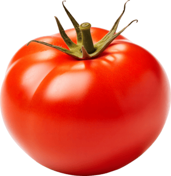

DICAS
Aprenda técnicas eficientes para estudar melhor, manter a disciplina e alcançar seus objetivos.
Aprenda técnicas eficientes para estudar melhor, manter a disciplina e alcançar seus objetivos.
1. Defina horários fixos Procure estudar sempre nos mesmos horários. Isso ajuda seu cérebro a criar um hábito e torna mais fácil manter a disciplina. 2. Estabeleça metas realistas Evite criar cronogramas impossíveis de cumprir. É melhor estudar 1 hora todos os dias do que tentar estudar 6 horas em um único dia e desistir depois. 3. Alterne as matérias Estudar apenas uma matéria por muito tempo pode ser cansativo. Alterne entre disciplinas de exatas, humanas e linguagens para tornar o aprendizado mais dinâmico. 4. Reserve tempo para revisões A revisão é fundamental para consolidar o aprendizado. Tente revisar os conteúdos estudados durante a semana. 5. Inclua momentos de descanso O descanso faz parte do processo de aprendizagem. Dormir bem e fazer pausas durante os estudos melhora a concentração e a memorização.
Método Pomodoro: O Método Pomodoro é uma técnica de gerenciamento de tempo criada para aumentar a concentração e reduzir a procrastinação. A ideia é dividir o estudo em períodos curtos e focados, intercalados com pequenas pausas para descanso.

A melhor rotina não é a mais intensa, mas sim a que você consegue manter por semanas e meses. A consistência é o que transforma pequenas sessões de estudo em grandes resultados.